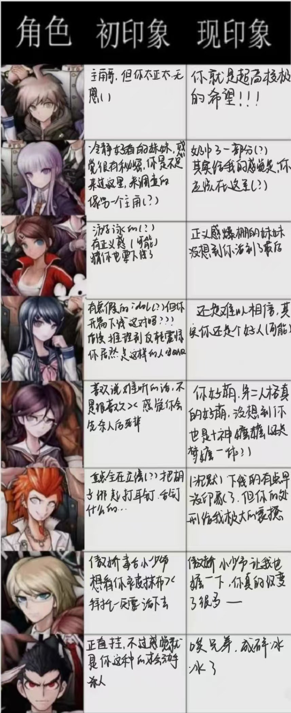

弹丸论破1repo——于绝望中诞生的希望
要进行弹丸repo了，不过感觉有点乱，想写的东西杂杂的，只能说整体给我的震撼非常大，不亚于逆转的，甚至我个人感觉比逆转表现形式更出色（当然个人不是喜欢这种偏黑暗系的，所以还是更喜欢逆转）
本来想按人物repo，但考虑戏份原因还是按照剧情流程缓慢复盘吧
开篇相关不多分析了，当然没想到战姐的伏笔在这里埋下了，打到最后真的倒吸一口凉气，第一章死的是舞园，确实令人意外，按照常规逻辑我把苗木舞园和雾切作为破案三人组（？按霓虹尿性搞点三角党争什么的，没想到她下线这么早，包括后面刷社交软件发现好像舞园和苗木还有什么关系（？具体没看懂）最后是被反杀的，只能说可怜之人必有可恨之处了（）
接下来是游戏里最有趣的部分，也就是处刑部分（这里必须说一下本人真的言弹苦手，下次一定开宝宝难度）里昂的处刑可以说是让我印象非常深刻的那种，真的很痛苦，死在自己最擅长的棒球什么的。。。
然后就到了第二章，也是不一样的一章，程序员是女装大佬已经很令我震惊了，下手的原因其实更令人唏嘘吧，只能说真的很压抑，过完这章我心里真的真的超级难受，我真的体会到一种绝望，对于这种无止境的自相残杀的绝望，真的好难想像之后会怎么发展
当然同时也爆出来另一个有趣的，也就是腐川的双重人格，我开始猜的是叶隐或者朝日奈来着，后续发展起来了倒是挺明显的，不过性格真的好疯，萌萌的，而且居然只杀男的，感觉更萌萌了。（ps：后续腐川看上了（？）了十神，一直想找他，逼的十神甚至躲进了更衣室（乐））这里就要提一嘴后续在社交媒体上看到，一个是十神公公，另一个是十神嬷嬷的互殴（bushi）
接下来就到了第三章，个人感觉第三章虽然表现力很有趣，但是线索有些过于明显了（？以及瑟雷丝的表现确实非常不一样，所以我也立刻锁定了瑟雷丝是凶手，作案手法什么的几乎瞬间猜到，主要比较吃惊的反而是一章死了两个，我当时算了一下过了学级裁判就剩七个人，已经灭了一半，真的离谱，我当时真在想最后不会只剩下四个人吧。另外瑟雷丝给的选择动手的理由也确实是非常有趣，我个人认为有点牵强，但确实让她下手了，另外你的梦想很伟大，我也想（）
接下来，也就是我个人认为最精彩，也是最高潮的部分来了，也就是第四章，也是最令我难以接受的一章，我真的我真的不能接受大神樱的死，尤其是她是自杀的，见证了前三章的恶念，其实大家心里都有这样的种子，但是大神，真的，用死掰正了这一切，每一个被她约谈的人，都下手了，但她其实从未自恃力量去伤害其他人，她用生命让大家团结起来，一起对付黑白熊。十神也不再把这一切当做游戏，而是明白真正需要对峙黑白熊了。这一章给我造成的冲击太大了，现在写下这些文字的时候，我依旧会流出泪水，为了阿樱，为了不知在何处的希望。
后续就是真相的推进，说几个点吧，首先是由于攻略原因，让我为了图鉴选择不相信雾切（被v瑞平：到头来你还是没有相信过她吗）假结局中两女三男都生了孩子，这是让我真震惊的（）有没有3p看（）然后就是反转了，非常非常震撼，真正的江之岛没有死，而是成为了黑白熊，也就是她和战作为姐妹——超高校级的绝望给大家带来绝望，其实这也解释了当时是江假扮战去刺杀苗木而被雾切阻止了，如果是超高校级的军人战，是不可能失手的，而战被江的杀死也回收了最开始的伏笔（真的超级震惊）最后江失败了然后体验所有的处刑一遍也是最令我震惊的，其实说她是绝望的，可她似乎从未感受到绝望，她最后真的认为自己在经历绝望吗，对于一个不是正常人的她，普通人的绝望我感觉真的不是她的绝望。
最后的最后，剩下的六个人背负着已经牺牲的人走出了希望之峰学园，也是算OE了具体未来怎么样，相信他们会自己承担的，其实想要隐藏ending的彩蛋，但那个扭蛋机实在是太难抽了，只能b站看了（）
填的初印象和现印象表也放这里了，最后就一句话——未来的路是希望还是绝望，由自己说了算！
